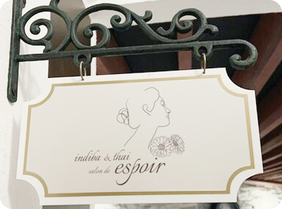

CONCEPT
心と身体を深く整える、タイ古式×インディバ。
タイ古式マッサージは「二人でするヨガ」とも呼ばれ、 施術者と受け手が呼吸を合わせながら、ゆっくりと身体を伸ばしていく伝統療法です。
足先から頭まで、身体に流れるエネルギーライン「セン」に沿ってアプローチし、 筋肉の緊張をやさしくほぐしていきます。
ゆったりとしたリズムの施術は、副交感神経を優位にし、 心身を深いリラックスへと導きます。
さらに、深部から身体を温めるインディバを組み合わせることで、
血液やリンパの流れを促進し、むくみや疲労の改善、代謝アップへと導きます。 身体の外側だけでなく、内側からも巡りを整え、 本来の健やかさと軽やかさを取り戻す時間を。 忙しい日常の中で、 心と身体をゆっくりと整えるひとときをお届けします。
スタッフ紹介
オリコノヒロエ
50代で生き方改革。
単身渡タイ、タイ政府認定セラピストに。
施術はインディバ深部温熱・タイ古式マッサージ 組合せがおすすめ。
コメント： 東洋医学に基づいた日々の食養生についてもご相談ください。 どこに行っても何をしても変わらなかった方の 本来の健康と美しさを確実にとりもどしていく お手伝いをさせていただきます。
